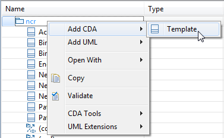
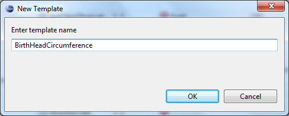
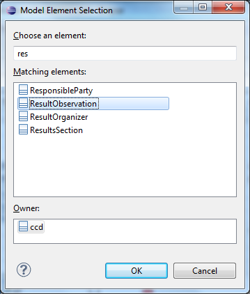
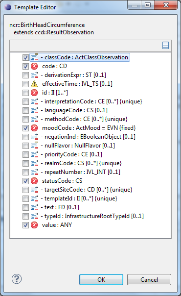
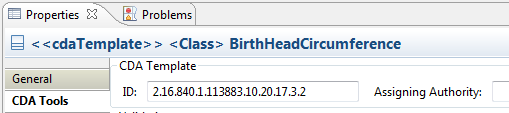
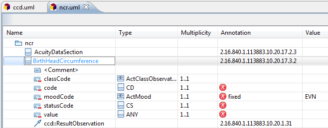

Create a new template class, choose its base type, and select
initial set of constrained attributes.
-
Select the table row for the top model package.
-
To add a new template, right-click on the model Package (e.g.
'ncr' or 'hitsp'), select

-
Enter the new template class name, using UpperCamelCase format.

-
Select the base class that this template restricts, either a class
from CDA or a parent template that this new template must conform to. You can
type the first few characters of a class name and the Matching elements list
will be limited to a few choices. Classes from all
currently open models will be shown in this list. If
necessary, open the model containing the base class you are searching for
before invoking this dialog.

-
Add a check mark beside each inherited attribute that you want to
constrain in this new template.

-
Enter the Template ID in the CDA Tools tab of the Properties view.

The following screen
shows the new template class displayed in the table editor.
